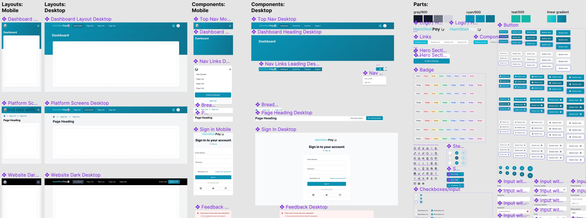

HamiltonPay
Enabling better payment collection options for small businesses

Problem: Transaction costs have a big impact on small businesses
Payment collection options for businesses are slow, unsafe, and expensive:
- Account transactions take 3-5 business days to process
- Checks and ACH expose account details
- Forms are error-prone
- Each transaction costs 2-3% of its value; roughly $1.7T are lost in fees, fraud, errors, and labor costs
By continuing to execute transactions on old infrastructure, everyone loses. Small businesses are especially impacted, because they can't absorb costs like big businesses and banks can.
HamiltonPay: Faster, safer, cheaper
HamiltonPay is trying to make payment collection instant and secure, for a low flat fee, by rethinking the technology infrastructure. A key part of this overhaul is blockchain.
Blockchain is popularly associated with cryptocurrency, but another application is smart contracts. Transactions execute only when a limited set of parameters, via smart contracts, are met. HamiltonPay whitelists transaction pipelines to quickly process smart contracts between trusted partners. End-users' accounts stay private. These approaches together are intended to make payments faster, safer, and cheaper.
Designing within shared systems
Understanding the data model: Monetary transactions are complex. I first researched how end-users currently make transactions and how banks process them. To understand the intervention proposed by HamiltonPay, the developer-built admin page became my window to the back-end, which provided the right granularity of information to understand how to simplify the experience for end-users.

By removing any redundancies in requests to the end-users, identifying where mistakes typically occured, and finding out what information could be pulled from linked platforms with user consent, user errors could be minimized.
Using a design system to help rapidly create working demos: During the early stage, we used Tailwind UI, an off-the-shelf development framework with accompanying Figma components. With the large library of layouts, components, and individual elements, I created our own design system semi-custom design system that the developers could build quickly. I essentially created wireframes that appeared to be high-fidelity, which the team could quickly turn into working product demos to pitch for seed funding.
Maintaining consistency across product variants: Our earliest adopters were independent fitness trainers who had moved their sessions and payments online during the pandemic. Next came independent medical clinics, whose payment collections were more complex. Bookended by the two were solo/micro entrepreneurs. Web developers would need an entirely different kind of site for documentation to add the HamiltonPay API to payment flows.
Our solutions needed to function similarly while addressing each group's unique needs. For that reason, most of my focus was on diagramming user flows with core similarities and varying feature sets.

We also wanted our solutions to visually belong together to keep demos simple at the early stage.


Wearing many hats
In addition to my UX responsibilities, I assisted with pitch decks, determined landing page content, created promotional materials, wrote demo scripts, and recorded voice-overs.

HamiltonPay
Himangshu Hazarika, Founder/CEO
Rakesh Kumar, MBA, CPO
User Experience
Nilpa Jhaveri, UX Designer
Development
Roman Chvanikov, VP Platform
Ping Zhao, Front-end Engineer